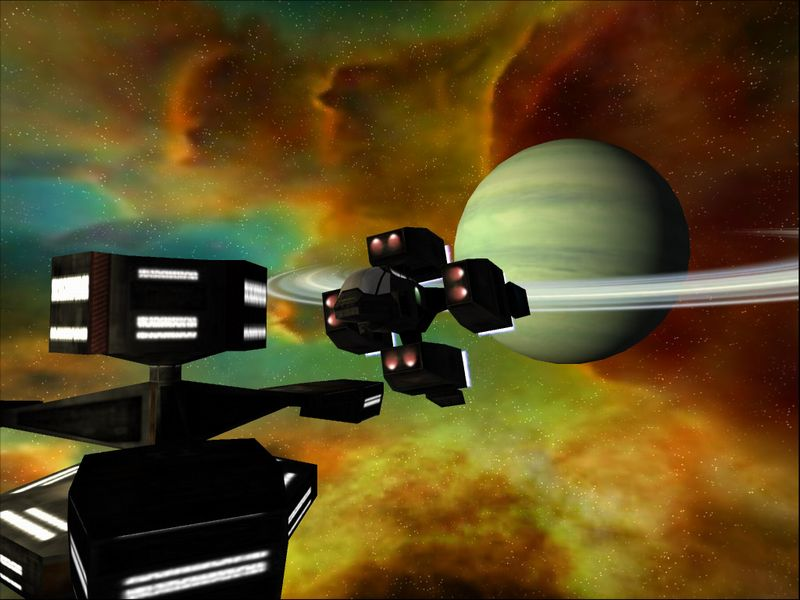

В прошлом году WildTangent выпустила очень необычный космический симулятор. Назывался он SabreWing, его главной отличительной особенностью было то, что инсталлировался он через интернет, а запускался в браузере. При весе всего в несколько мегабайт SabreWing практически не уступал таким играм, как Descent Freespace. Секрет заключался в движке WebDriver, лицензии на который уже приобрели такие известные компании, как EA и Sierra. Не так давно состоялся выход SabreWing 2, действие которого происходит через сто пятьдесят лет после событий, описанный в первой части игры. Дистрибутив теперь можно спокойно скачать и играть без подключения к интернету, другое дело, что детище WildTangent перешло в категорию Shareware. В Shareware-варианте доступна всего одна миссия, если же вы заплатите, то откроется вся кампания.

На страже Родины
Если первая часть SabreWing все же несколько не дотягивала по своему качеству до других современных космических симуляторов, то продолжение подобных недостатков лишено. Отныне модели кораблей по своей проработке ничем не уступают тому же Starlancer, реализована масса спецэффектов, да и космос теперь выглядит очень неплохо. Кроме того, то и дело проскальзывают переговоры пилотов, выполненные в стиле Wing Commander. Честно говоря, даже не верится, что все это великолепие занимает какие-то восемь с половиной мегабайт. Что же касается управления, то оно выполнена по общепринятым стандартам космосимов, к тому же игра поддерживает джойстики. Игра получилась не только красивой, но и динамичной, а это качество весьма высоко ценится.
Одним словом, если вам надоело в сотый раз проходить Starlancer, а ждать HomePlanet и Freelancer уже нет никаких сил, попробуйте SabreWing 2. Эта игра доставит вам массу удовольствия, а заодно напомнит о временах, когда Wing Commander правил миром.